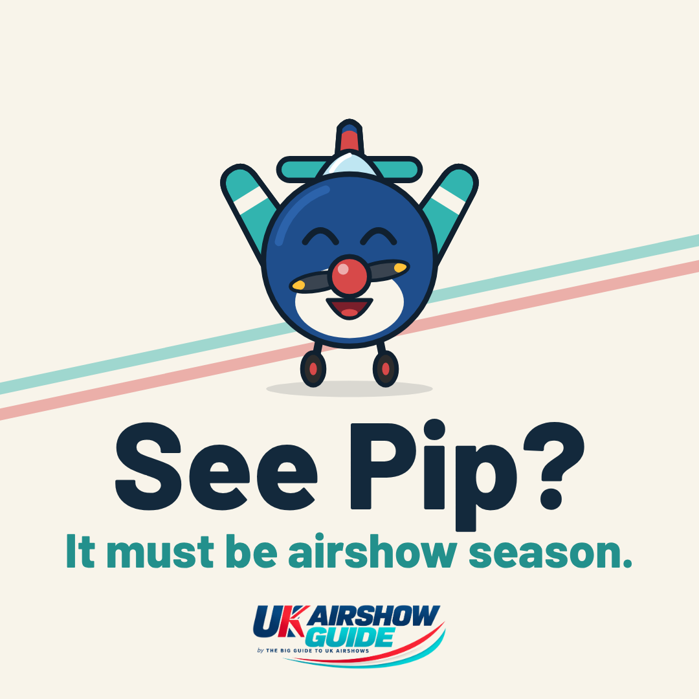
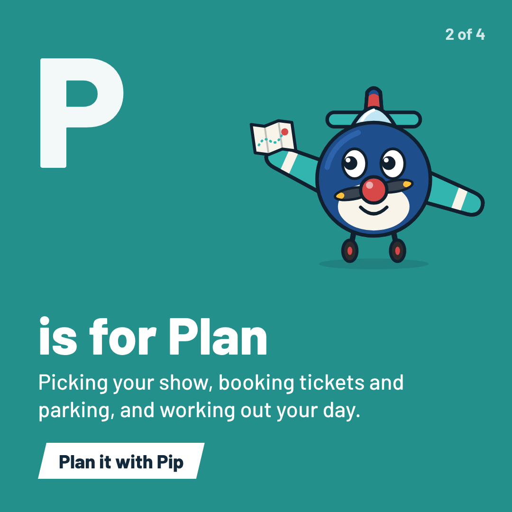
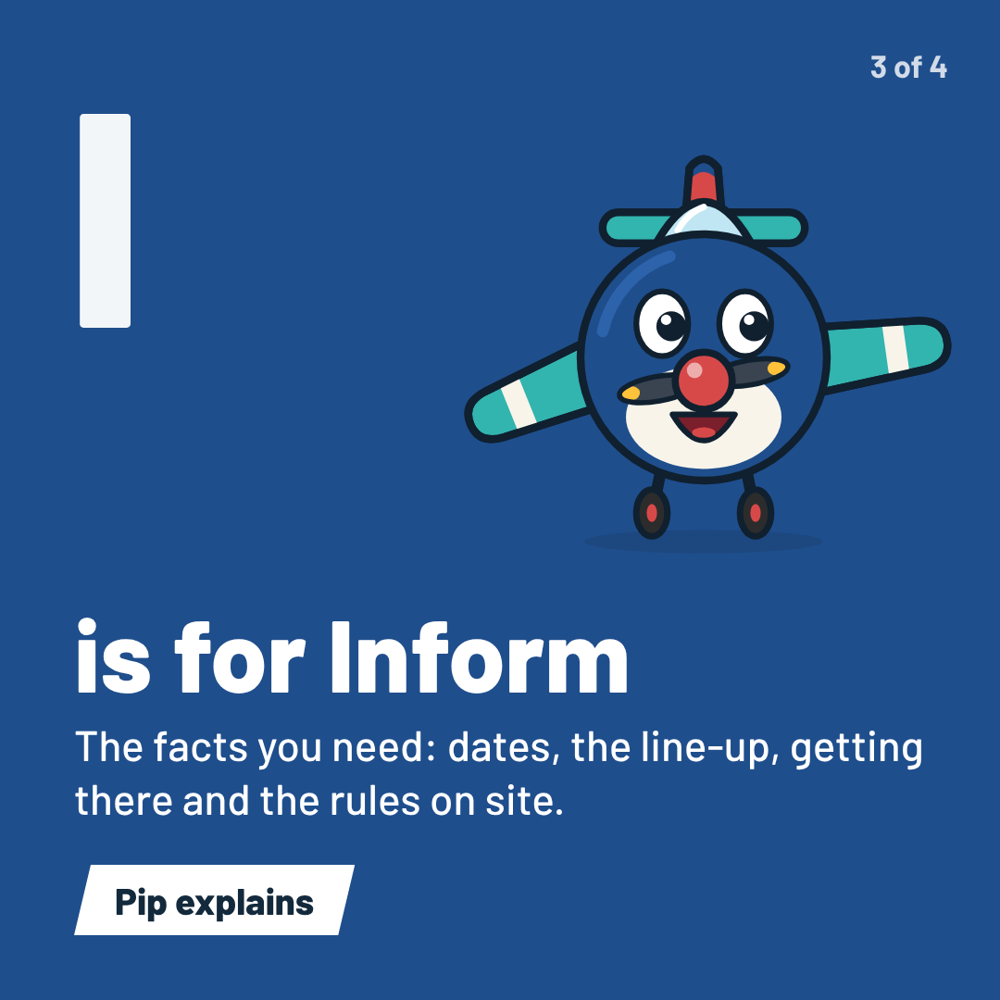

Make Pip known
One year to turn Pip into a mascot that families recognise: from the name reveal this winter, through the 2027 show season, to a "draw Pip" competition at the end of it.
Plan.Inform.Prepare.
First version, November 2026
One year to turn Pip into a mascot that families recognise: from the name reveal this winter, through the 2027 show season, to a "draw Pip" competition at the end of it.
See Pip? It must be airshow season.
Every UK airshow, one easy guide, and Pip helps you plan, find out and get ready.
The site already does the three jobs in PIP. The campaign puts a face on them. Whenever someone sees Pip, they should think "that's the airshow guide, they'll help me sort the day out".
Regular, recognisable series are what make a mascot stick. Each series has its own colour, pose and name, so people learn them quickly.
Which show suits you, when tickets and parking go on sale, and how the day runs. Built from the planner, the calendar and Pick your show.
InstagramFacebookWebsiteShort cartoons, under a minute, explaining one airshow thing: the flightline walk, parking permits, what the crowd line is, why line-ups change.
YouTube ShortsInstagram ReelsFacebookWhat to bring, ear defenders, the weather for show week and getting home. Built from the kit calculator, the checklists and your tips.
InstagramFacebookPrintablesA printable spotter mission for each big show, made from that show's Kids' Corner list, with a Pip "well done" badge to colour in at the end. Families print it the night before, and it's what turns Pip into a character children ask for.
Show dates are copied from the live Duxford and RIAT pages. The 2027 season planner lists 46 confirmed shows so far, so other shows slot in as their pages are built.
One person runs this, so the plan is small on purpose. Doing a little every week beats a big burst that stops.
| Out of season | Show season | |
|---|---|---|
| Pip posts | One a week | Two a week |
| Pip explains cartoon | One a month | One a month |
| Spotter mission | As show pages are ready | One for each big show |
| Trailers | Every trailer ends with Pip waving, as the Duxford one does | |
Pip shows up in about one post in three, not every post. Your photos and your own voice stay the main thing on your channels.
Pip is your mascot on social media more than on the website.
Keep your logo as the profile picture on each channel. Pip works best as the friendly face inside posts.
Five square graphics for Instagram and Facebook: the "airshow season" square on its own, and a four part swipe post. Also ready: the Meet Pip cartoon (66 seconds), a 16 second teaser and the poster.





Say hello to Pip! 👋 Pip is the new face of the UK Airshow Guide, and PIP stands for Plan, Inform, Prepare. That's what this guide is all about, from picking your show to getting home again. You'll see Pip in our videos, kids' spotter missions and checklists this season. Swipe to meet Pip properly ✈️
No made-up targets. Note where each one stands at the reveal, then check every three months.
Everything I can make for you is marked. Anything that changes the live site waits for your yes.